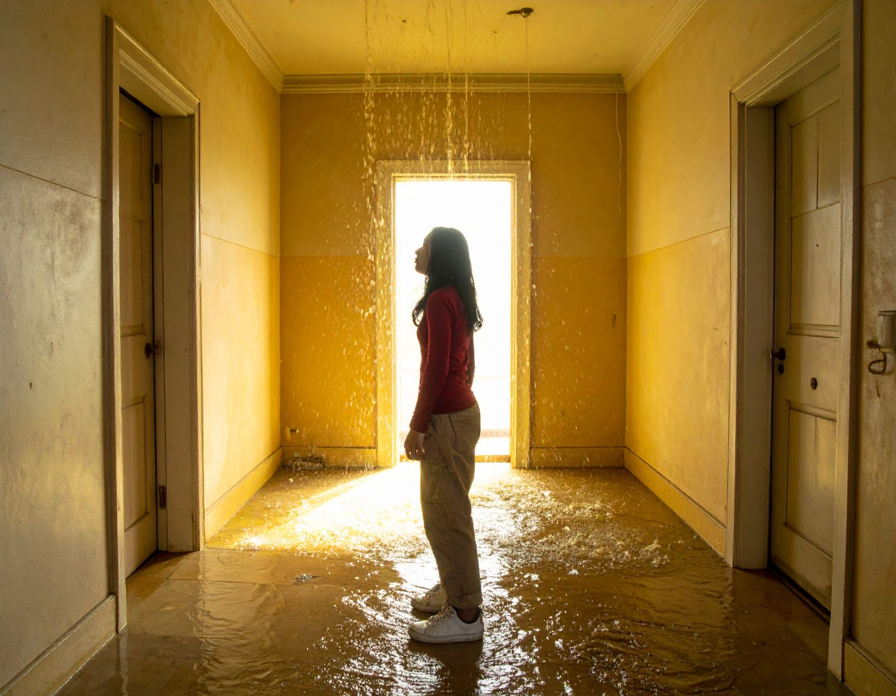
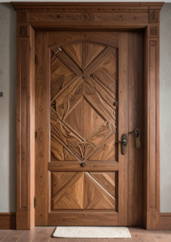

Gas began seeping into the room so suddenly that Patritca didn’t even notice it at first—just a faint hiss, a strange chemical smell, and then the heavy realization that the air itself was turning dangerous. Her eyes watered as the haze thickened, curling around her ankles and rising fast. Panic clawed at her throat. She spun around, searching for any sign of where it was coming from, but the room was already too clouded to see clearly. Every breath felt sharper, thinner, like the room was shrinking around her. |
 |
Her pulse hammered as she stumbled backward, spotting two doors—one on the left, one on the right—both equally close, both equally unknown. The gas was climbing now, swirling at her waist, making her vision blur at the edges. She didn’t have time to think, barely even time to breathe. She had to move, and she had to move now. She stood frozen for a single heartbeat, knowing she had to choose between the left door or the right door. |
 |